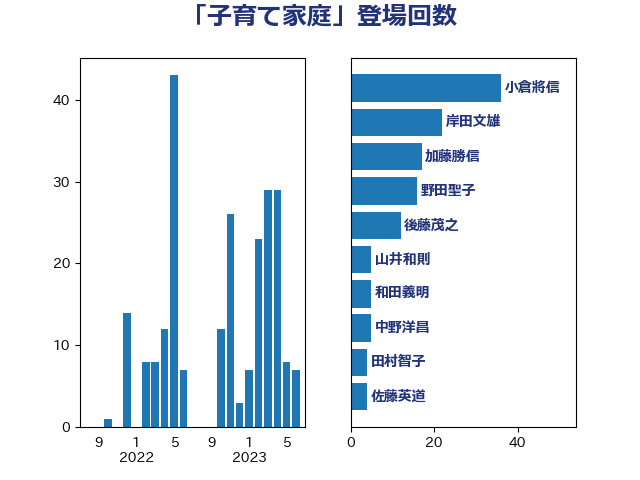

単語「子育て家庭」

| 小倉將信 | 自由民主党 | 36 回 |
| 岸田文雄 | 自由民主党 | 22 回 |
| 加藤勝信 | 自由民主党 | 17 回 |
| 野田聖子 | 自由民主党 | 16 回 |
| 後藤茂之 | 自由民主党 | 12 回 |
| 山井和則 | 立憲民主党 | 5 回 |
| 和田義明 | 自由民主党 | 5 回 |
| 中野洋昌 | 公明党 | 5 回 |
| 田村智子 | 日本共産党 | 4 回 |
| 佐藤英道 | 公明党 | 4 回 |
| 坂本祐之輔 | 立憲民主党 | 3 回 |
| 吉田久美子 | 公明党 | 3 回 |
| 伊佐進一 | 公明党 | 3 回 |
| 下野六太 | 公明党 | 3 回 |
| 石井啓一 | 公明党 | 2 回 |
| 田中健 | 国民民主党 | 2 回 |
| 江田憲司 | 立憲民主党 | 2 回 |
| 星北斗 | 自由民主党 | 2 回 |
| 堀場幸子 | 日本維新の会 | 2 回 |
| 古賀篤 | 自由民主党 | 2 回 |
| 鰐淵洋子 | 公明党 | 1 回 |
| 高橋はるみ | 自由民主党 | 1 回 |
| 遠藤良太 | 日本維新の会 | 1 回 |
| 西田実仁 | 公明党 | 1 回 |
| 蓮舫 | 立憲民主党 | 1 回 |
| 茂木敏充 | 自由民主党 | 1 回 |
| 舞立昇治 | 自由民主党 | 1 回 |
| 緒方林太郎 | 無所属 | 1 回 |
| 石原正敬 | 自由民主党 | 1 回 |
| 浮島智子 | 公明党 | 1 回 |
| 泉健太 | 立憲民主党 | 1 回 |
| 比嘉奈津美 | 自由民主党 | 1 回 |
| 柴田巧 | 日本維新の会 | 1 回 |
| 松野博一 | 自由民主党 | 1 回 |
| 新妻秀規 | 公明党 | 1 回 |
| 広瀬めぐみ | 自由民主党 | 1 回 |
| 山本香苗 | 公明党 | 1 回 |
| 山本博司 | 公明党 | 1 回 |
| 堤かなめ | 立憲民主党 | 1 回 |
| 吉良州司 | 無所属 | 1 回 |
| 吉良よし子 | 日本共産党 | 1 回 |
| 古賀友一郎 | 自由民主党 | 1 回 |
| 伊藤渉 | 公明党 | 1 回 |
| 三浦信祐 | 公明党 | 1 回 |